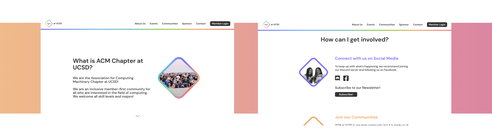

Front-End Developer
Having grown to be one of UCSD’s largest computing organizations, ACM at UCSD sought to build a new website that recognizes the contributions of its members and showcases the events and initiatives that it brings to the UCSD student community.
A computing community should have a website that is representative of the technical expertise of its members, while also publicizing the organization’s initiatives and events.
As a student, the reputation of a student organization can make a difference in deciding whether one wants to involve themselves in the organization. What’s the easiest way of building credibility? A performant and representative website is a must for such organizations.
Acknowledging this necessity can make a difference in the initial impression that people would have about the organization, and therefore it needs to be carefully crafted to be representative of all the aspects that compose the organization.
A necessity for any website is a landing page that showcases the most important aspects of our organization.
As a way to strengthen our credibility as an organization, it was important to showcase our existing company sponsors while also attracting new sponsors.
As a growing organization with numerous initiatives, there was a need to highlight our primary initiatives and sub-organizations.
As an organizational website, there comes the expectation that the website would have to be updated on a regular basis.
With this project being one of my first experiences working in a team that is composed of a product manager, designers and developers, it became necessary to acknowledge the importance of communication. Along the way, there was a need for a constant back and forth, so that the developers understood what the designers intended through the original designs.
We adopted the Agile methodology to regulate the project’s progress, with certain tasks (stories) being assigned to each individual in the team. With Agile came the benefit of iterative development, in which design changes throughout the development process were expected. As a result, developers had to always be prepared to make slight changes to existing components in case of any new improvements or suggestions. There was value in using Agile, through which it helped ensure the continuous progress of the project and gave consistent deadlines to each team member.
It was interesting to experience working in a team that had more designers than developers, and this turned out to be a lot of help in terms of clarifying the design expectations while also ensuring that designs were being delivered on time. I think that this type of balance was appropriate for a static website, since most of the emphasis was on the content as opposed to the functionality provided by the website.